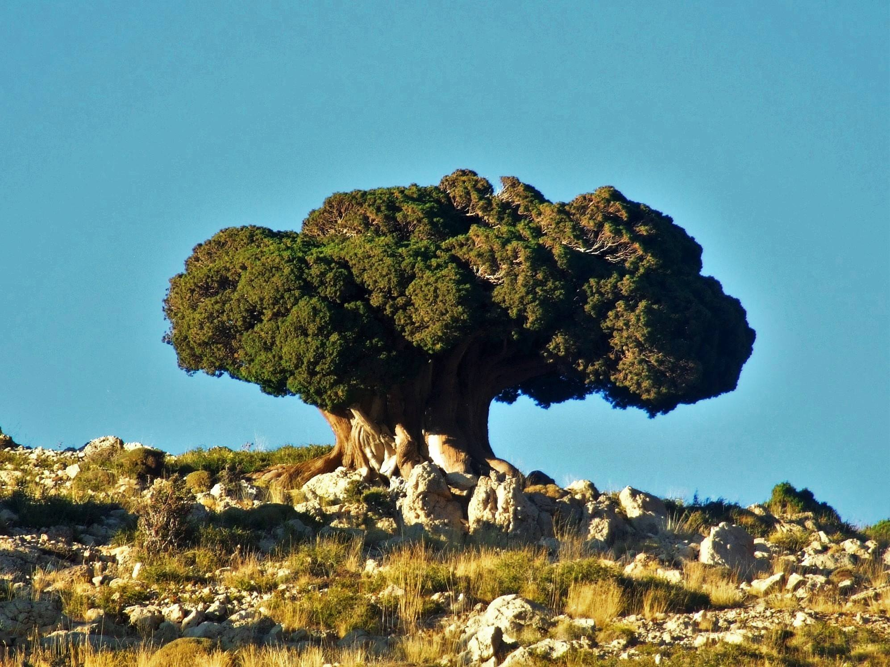

مصر: قرار جديد لتنظيم الصيد وملاحقة المخالفات في موسم هجرة الخريف
أعلنت وزارة التنمية المحلية والبيئة في مصر قراراً جديداً لتنظيم أعمال الصيد، بالتوازي مع بدء جهاز شؤون البيئة خطة رصد ومتابعة مع انطلاق موسم هجرة الخريف.
أعلنت وزارة التنمية المحلية والبيئة في مصر قراراً جديداً لتنظيم أعمال الصيد، بالتوازي مع بدء جهاز شؤون البيئة خطة رصد ومتابعة مع انطلاق موسم هجرة الخريف.

حملة خريفية لحماية الطيور المهاجرة في لبنان، وأدونيس الخطيب لـ«صيد»: شراكة ميدانية منذ 2017 تؤكد دور الصياد المستدام في مكافحة الصيد الجائر.
الأمن البيئي يدعو إلى الالتزام بالتراخيص والأماكن والأنواع المسموح بها خلال موسم الصيد 2026–2027.

النسخة العاشرة من معرض كتارا الدولي للصيد والصقور جمعت التراث والابتكار والتجارة والسياحة، واستقطب مزاد الصقور اهتمامًا واسعًا.

أطلقت المملكة العربية السعودية موسم الصيد البري للعام 2026–2027، في تجربة تدخل عامها السادس وتواصل تطوير نموذج يقوم على تنظيم ممارسة الصيد وربطها بحماية الحياة الفطرية واستدامة مواردها.
دراسة تحذّر من تراجع الأنواع المهاجرة، ومعركة لحماية بحيرة ألبانية، وحماية البط الحديدي من كرواتيا الى مصر: مستجدات دولية تفتح أسئلة الموسم.
مع دخول لبنان موسم هجرة الطيور الخريفية، يكثّف مركز الشرق الأوسط للصيد المستدام ومكافحة الصيد الجائر ( (MECSHAP) )جهوده الميدانية، من خلال وحدة مكافحة الصيد الجائر ( (APU) ) وشبكة…

أثبتت تجربة منع الصيد في لبنان خلال السنوات الفائتة عدم جدواها، إذ لم توقف الانتهاكات، بل حوّلتها إلى أنماط أكثر خطورة. فقد ظهرت شريحة واسعة من القوّاصين الذين يستخدمون بنادق رخيص…

يُعرف الشهرمان الشائع ( Common Shelduck ) بأنه طائر مُهاجر شَحيح ومشتٍ إلى الأراضي الرطبة، السواحل، والجزر في لبنان. ينتمي إلى عائلة البطيات ( Anatidae ) ويتميّز بحجمه الكبير وريش…

تحية طيبة وأهلاً بكم في مجلتنا "صيد"، المنصة الرائدة لنخبة الصيادين اللبنانيين والعرب، أسياد البرّ والبحر، ولعشّاق الصيد والطبيعة منذ عام 2012. نحن هنا لنأخذكم في رحلة مُمتعة ومُث…
البوم مهمّة نحو الحفاظ على التنوّع البيولوجي البوم من الطيور المهمة للغاية في النظم البيئية، حيث تلعب دورًا حيويًا في الحفاظ على توازن البيئة الطبيعية. فهي طيور ليلية تتغذى على ال…

شجرة اللزاب في لبنان ينتشر هذا النوع من الشجر على السفوح الغربية والشرقية لسلسلة جبال لبنان الغربية، بين ارتفاعات متفاوتة حسب المنحدرات. لوحظ انتشارها في منطقة وادي نهر ابراهيم، أ…
ورق الغار أو نبات الغار تُعرف بالاسم العلمي Laurus Nobilis، كما أنها تعرف بورق موسى في بعض البلدان العربية. تعتبر أشجار الغار من الأشجار المُعمّرة والدائمة الخضرة، عرفت بشجرة إله…
من حكايات الصيد ونهفاته، لا بدّ من مرور طريف على رأي "الزوجات" ومفهومهنّ لرحلات الرجال المتكرّرة والكثيرة في موسم الصيد فكان لـ"صيد" عدّة لقاءات مع "زوجاتهم" إيمندا عودة: "يلا بلّ…
أقام "اتحاد مجموعات الصيد البري في لبنان"، الأحد 9 تشرين الأول 2022 ، يومًا بيئيًا مُخصّصًا لجمع فراغات خرطوش الصيد، وتنظيف الأراضي الزراعية والبريّة. وقد شارك فيه صيادون من وفي م…